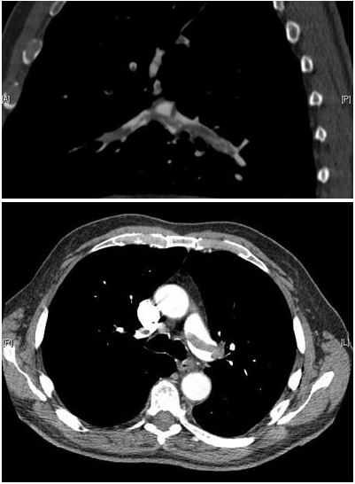

Ficha del catálogo
Tromboembolia pulmonar (angio-TC)
- Sistema
- Respiratorio
- Modalidad
- TC
- Región
- Tórax
- Dificultad
- Avanzado
Obstrucción de las arterias pulmonares por un trombo que habitualmente procede de las venas profundas de las piernas. Es una urgencia potencialmente mortal y la angiotomografía pulmonar es hoy el estudio de elección para diagnosticarla.
Técnica
Tomografía con contraste yodado intravenoso administrado a alto flujo y sincronizado para opacificar al máximo las arterias pulmonares en el momento de la adquisición.
Qué observar
- Defecto de repleción: Imagen hipodensa dentro de la luz arterial rodeada por contraste, que es el signo diagnóstico directo
- Trombo en silla de montar cabalgando sobre la bifurcación de la arteria pulmonar principal, forma de máxima gravedad
- Extensión y localización de los defectos: Centrales, lobares, segmentarios o subsegmentarios
- Signos de sobrecarga del ventrículo derecho: Dilatación ventricular y desviación del tabique interventricular, indicadores de mal pronóstico
- Infarto pulmonar: Opacidad periférica de base pleural y forma triangular (joroba de Hampton)
- Derrame pleural y atelectasias laminares acompañantes
Hallazgos
Defecto de repleción endoluminal en las arterias pulmonares compatible con material trombótico.
Perlas
La radiografía de tórax en la tromboembolia suele ser normal o casi normal, y ese contraste entre un paciente muy sintomático y una radiografía limpia es en sí mismo una pista. Su verdadera utilidad es descartar otras causas de disnea aguda, no diagnosticar la embolia.
Diagnóstico diferencial
- Artefacto de flujo por mezcla de contraste
- Produce zonas de menor densidad mal definidas, sin bordes netos, que cambian entre cortes y se localizan sobre todo en las arterias de los lóbulos inferiores; el trombo verdadero tiene bordes definidos y persiste en cortes consecutivos.
- Tromboembolia crónica
- El material se adosa a la pared formando ángulos obtusos, con bandas, calcificación, retracción y estenosis, en lugar del defecto central rodeado de contraste propio del trombo agudo.
- Tumor endovascular pulmonar
- El material intraluminal expande la arteria, muestra realce tras el contraste y crece en los controles, a diferencia del trombo, que no realza.
- Adenopatías o tejido perihiliar
- Se sitúan por fuera de la luz vascular y se identifican como estructuras independientes al seguir el vaso corte a corte.
- Disección o vasculitis pulmonar
- Se observa engrosamiento parietal circunferencial y realce de la pared arterial, con alteración segmentaria del calibre, más que defectos endoluminales.
- Otras causas de disnea aguda
- La misma tomografía puede mostrar neumonía, neumotórax, disección aórtica o derrame que expliquen el cuadro sin trombo arterial.
Simuladores
- El movimiento respiratorio y los artefactos de pulsación cardiaca duplican los contornos vasculares y crean pseudodefectos, sobre todo en la língula y en los lóbulos inferiores.
- Un estudio con opacificación insuficiente por sincronización inadecuada hace que las arterias aparezcan poco densas y simulen defectos difusos (conviene comprobar la densidad en el tronco de la arteria pulmonar antes de informar).
- Los ganglios linfáticos hiliares normales adyacentes a los vasos pueden confundirse con trombos si no se sigue el vaso en cortes contiguos y en reconstrucciones.
- En pacientes con gasto cardiaco alto o con maniobra de Valsalva durante la adquisición entra sangre no opacificada desde la vena cava inferior y genera artefactos de flujo característicos.
Por modalidad
- TC
- La angiotomografía pulmonar es el estudio de elección: Visualiza directamente el trombo, define su extensión y valora la repercusión sobre el ventrículo derecho.
- RX
- Suele ser normal o casi normal y su valor está en descartar otras causas de disnea aguda; puede mostrar signos indirectos inespecíficos.
- US
- El estudio Doppler de las venas de los miembros inferiores demuestra la trombosis de origen, y el ecocardiograma valora la sobrecarga derecha en el paciente inestable.
- RM
- Alternativa sin radiación ni contraste yodado en pacientes seleccionados, como embarazadas o alérgicos, aunque su disponibilidad y su rendimiento son menores.
Protocolo
Se coloca una vía de buen calibre en la fosa antecubital y se administra contraste yodado a alto flujo seguido de suero fisiológico, con seguimiento del bolo mediante una región de interés situada en el tronco de la arteria pulmonar para disparar la adquisición en el pico de opacificación arterial. Se adquieren cortes finos en apnea inspiratoria suave, desde los vértices hasta las bases, con reconstrucciones en los tres planos. En el mismo estudio se valora la relación entre los diámetros del ventrículo derecho y del izquierdo, indicador pronóstico. En embarazadas se ajusta la dosis y se valora primero el estudio venoso de miembros inferiores.
Clasificación
La localización de los defectos se describe en centrales, incluyendo el trombo en silla de montar sobre la bifurcación, lobares, segmentarios y subsegmentarios. La estratificación pronóstica combina la clínica y la imagen: Se distingue la tromboembolia de alto riesgo, con inestabilidad hemodinámica, de las de riesgo intermedio y bajo, empleando escalas clínicas como el índice de gravedad de la embolia pulmonar junto con marcadores de disfunción del ventrículo derecho, entre ellos la relación entre ventrículo derecho e izquierdo medida en la tomografía. Antes del estudio se aplican reglas de probabilidad clínica como la escala de Wells, que junto con el dímero D determina la indicación de la angiotomografía.
Errores frecuentes
- Informar trombos subsegmentarios aislados en estudios con artefactos de movimiento o con mala opacificación, con el riesgo de sobrediagnóstico.
- Distinguir mal entre trombo agudo y crónico, lo que cambia por completo el tratamiento.
- Olvidar valorar la repercusión sobre el ventrículo derecho, que es un dato pronóstico esencial que se obtiene del mismo estudio.
- Concluir que una radiografía de tórax normal descarta la tromboembolia, cuando precisamente lo habitual es que sea normal.

tromboembolia TEP angiotc trombo arteria pulmonar urgencia contraste